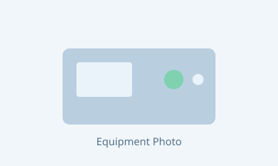
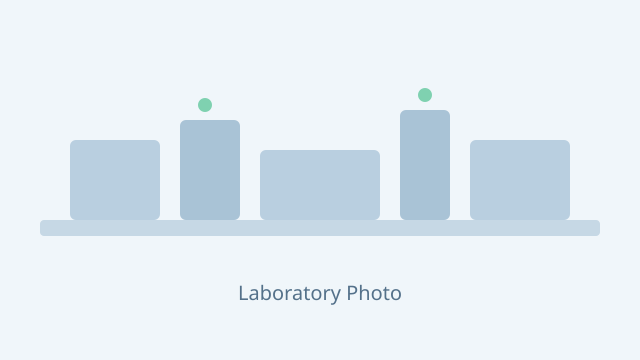

AESE 연구실이 보유한 주요 분석 장비를 소개합니다.Major analytical instruments of the AESE Laboratory.

열분해·가스화 공정에서 생성되는 합성가스(H2, CO, CO2, CH4 등)의 조성을 신속하게 정량 분석합니다. Rapid quantitative analysis of syngas composition (H2, CO, CO2, CH4, etc.) generated from pyrolysis and gasification processes.
고정가스와 탄화수소를 동시에 분석할 수 있는 밸브 시스템 GC로, 열화학 반응 생성가스의 정밀 분석에 활용합니다. A valve-system GC capable of simultaneous analysis of fixed gases and hydrocarbons, used for precise characterization of gaseous products from thermochemical reactions.
촉매, 바이오차, 흡착제 등 다공성 소재의 비표면적과 기공 특성을 분석하여 소재 설계와 성능 평가에 활용합니다. Analysis of specific surface area and pore characteristics of porous materials — catalysts, biochar, and adsorbents — for material design and performance evaluation.
장비 사진은 추후 실제 사진으로 교체될 예정입니다. 장비 이용 문의는 이메일로 연락해 주세요. Equipment photos will be updated soon. For equipment use inquiries, please contact us by email.
